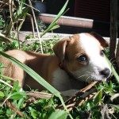

On Your Own Time,Photos,Puppy Class
12 October 2010 | Comments Off
Radish!

We left the ‘dish in the ground a little too long and it looked a bit too mutant to eat.
So we gave it to the dog! 
Puppy Class
Puppy Class on Saturday went very well.
Roxy performed well, we were proud!
The big trick for the week was Leave It, which, as avid readers will know, she likes a lot.
We also did “Puppy Pushups” – sit, down, sit.
We do do this at home already, so again the test was just about the new place and doggy distractions.
Chipping
Ran off to the Vet last night and Roxy got more shots, plus a chip of the micro variety.
Now we can find out where she is at weekends if she doesn’t answer her cellphone.

Farm Kennel Thing
We’re off on Thursday morning for a few days.
We have a house-sitter coming in (Thank you, Lesley!), but we didn’t want to impose dog-sitting.
So, we looked for, and found, a kennel type place.
The place, Shekinah Lodge, is lovely. It’s a farm plot, divided up into little fields.
They put their pups into packs of similar sizes and temperaments, and they run around in their fieldy bits.
Each fieldy bit also has a paddling pool and a big (air-conditioned / heated in summer / winter) wendy house for sleeping.
It’s lush, man!
We will be sad to leave Roxy there, but I’m sure she’ll have lots of fun and the other dogs there looked silly-happy.
We had a bit of a practice on Sunday, actually.
We were out for the day and Anna kindly agreed (thank you!) to let Roxy bounce around with Moneo, her border collie, for the day.
Roxy was apparently fine for a few hours, then had a bit of a cry, then was fine again.
+ (;_;) +
We took her there at 9 in the morning and picked her up at 5 in the evening, and she was shattered. I think she didn’t stopped playing the whole day.
This bodes well for the kennelling: she will be too tired to miss us!
On Your Own Time,Training
22 August 2010 | Comments Off
Roxy continues to amuse and entertain and be lovely.
She’s still very friendly and excited to meet people and this pleases me.
We’re giving her training sessions each day before each meal.
In the mornings, evenings, and weekends this means me and puppy mummy.
We stand at opposite ends of the study/lounge/kitchen area and take turns calling her to us for some training goodness.
Like a game of dog tennis.
It is awesome.
At the moment we’re doing Sit, Stay, Down.
Roxy is clever! The dog books / sites do not lie! Training is fun!
Being a puppy daddy is happy making.
Sad Face
On Friday last week I had a meeting thing at 10 and another at 2.
I thought I’d have at least an hour between them for some eating, weeing, and playing (for Roxy and for me).
My 10 ran over bigtime, and I practically had to run in, feed her, run out. And I was still ten minutes late for the 2 meeting!
I felt like a very bad puppy daddy. 
And I had separation anxiety while I was out, never mind her!
An an antidote, have some pictures of Roxy acting a bit mad in the garden:


Don’t be a pussy
In other news, she appears to be learning to fight / play like cat.
She copies Sproing’s one paw punch.
We saw it in action a lot yesterday when we went to visit Anna and her very well behaved, but very energetic, Border Collie – Maneo.
It’s very interesting to watch Roxy’s reactions to other dogs.
She spent the fist hour hiding under the couch and yelping a lot.
She spent the last hour climbing over his face and biting his ears.
She slept very, very, well last night!
House Training,On Your Own Time,Photos
16 August 2010 | 2 Comments
Most recent challenge: collar.
We haz a very cute red one (photo below) that Roxy, of course, hates.
She goes into this weird epileptic-type fit once she realises she’s got it on, then flumps down somewhere and looks all depressed. Poor puppy!
We have adapted the kennel.
She’s an inside dog, so kennelling outside seems silly.
The kennel currently lives, roofless, next to the bed, with her dog bed in it.
She loves it!
After the next week or two, we’re going to put the roof back on and move the kennel into a corner.
Slowly, slowly, catch-y soft monkey. Dog. Thing.
After that, it gets a door on the front. It’s all about crating.
It seemed a bit mental to me at first, but now I’m getting the idea. Safe, quiet, place and all that.
Finally managing to find some time to read the dog training book we bought.
It’s got some good training techniques, but lots of it is wrapped in odd hippy new-age stuff.
Hmm.
Also: photos!


Biting,On Your Own Time
13 August 2010 | 2 Comments
Roxy favourite thing to do (when she’s excited) is to bite stuff.
Like our toes. Mine are especially easy targets because I’m wearing slops more often that not.
The distraction technique is partially working.
The yelp technique seems to be having a better effect. This is the rather embarrassing act of basically imitating a puppy playmate; if Roxy bites too hard, you yelp like you’ve been hurt (not too difficult – her teeth are pretty sharp.).
Next step is combining this with downtime. The trick (apparently, like most of the training) is not too make the punishment too shouty / angry. Going to the chill out room (classical music playing almost 24-7. Yo.) isn’t the punishment (because the chill out room is gooood and *hypno-face* you waaaaant to gooooo there) – being alone is the punishment. If you are good, you get to spend time with the humans.
Well, something like that.
Going back to the SOHO for a minute: I don’t have any problems with being a hard ass. Umm…
I will not go and comfort / say hi to Roxy while she’s still whining and whinging (and fecking A, she can whine and whinge. The sounds are so weird. I will attempt to describe them later.) when she’s on her own in the bedroom (and supposed to be sleeping / chilling).
I know that this is good for Roxy (and us) in terms of obedience and a good relationship and all that. But man, it frazzles your head. (0_o)
On Your Own Time,Sleeping
11 August 2010 | 4 Comments
This is a bit out of sequence, but: current big task is to get Roxy used to being on her own.
Since I work from home she’ll be spending a lot of time around me. This is groovy.
However, I do need to leave the house during the day occasionally (to buy chocolate or go and drink beer with Evo, for example).
Also, Jo and I are quite social creatures and we like to go out and see people for dinner in the evening.
So, what to do with doggy?
We tried some kennel action yesterday. I had to go out for about two hours to a meeting.
We spent time with her, getting her used to the kennel, gave her a whole bunch of her toys and stuff, but the experiment was basically a failure.
She managed to get out of the enclosure we’d built on the stoop around the kennel and was barking / yowling at the bedroom window.
I suspect the cats (i.e. Sproing) took the opportunity to be less than friendly with her. Fear The Claw.
So, new plan, after more researching: leave her in the house, in a closed off area.
She sleeps in a dog bed next to our bed. For now, we close this off so that she only has access to a bit of the bedroom – the bit with newspaper on the floor.
The plan is to put her there while we’re out, to tire her out by lots of playing before we leave, and to leave her with her toys and a stuffed Kong thingy (which, btw, are silly good.).
Second prong of plan is to put her there during the daytime to get used to being away from Teh Humans.
Which is where she is right now.
Sleeping.
In other news: I am sleepy and am having great trouble concentrating on work.
As you may be able to tell…


{kind=link}